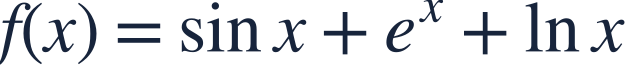
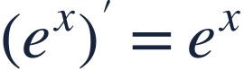
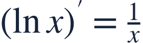
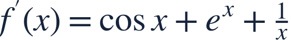
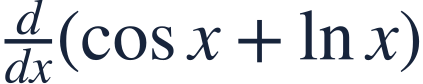

Basic function derivatives
기본 함수의 도함수

Different function families have different basic derivative rules.
함수의 종류에 따라 기본 미분 공식이 다릅니다.

Different function families have different basic derivative rules.
함수의 종류에 따라 기본 미분 공식이 다릅니다.

Angles are radians, and the real logarithm here requires x>0.
각도는 라디안이며 여기서 실수 로그는 x>0을 요구합니다.

Use the correct basic rule for each term, then add.
각 항에 맞는 기본 공식을 사용한 뒤 더합니다.

A logarithm differentiates to a reciprocal, not another logarithm.
로그를 미분하면 로그가 아니라 역수가 됩니다.

Combine the three derivatives without changing their signs.
세 도함수의 부호를 유지하며 더합니다.
The original domain remains part of the answer.
원래 함수의 정의역도 답의 일부입니다.
The derivative of cosine is negative sine; the sine rule has a different sign.
코사인의 도함수는 음의 사인입니다. 사인 공식과 부호를 구별하세요.

State the derivative and its real domain.
도함수와 실수 정의역을 함께 쓰세요.